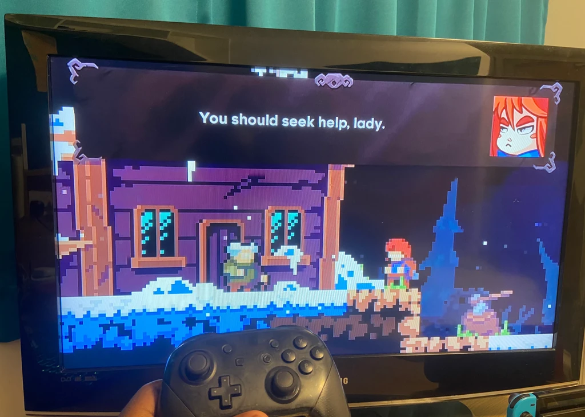

Characters, worlds and the words between them. A home for my writing and the thinking behind my stories.
TOBI ADEFIDIYA
Narrative & Writing
STORIES · SCRIPTS ANALYSES · PROCESS
01Script Excerpts
THE WRITING ARCHIVE 01
LOVANIA
ORIGINAL WRITING
Original Writing
LOVANIA
Two excerpts from a personal passion project: The inner thoughts for Karsi, the protagonist, at her brother-in-arms’ final resting place, and a tense confrontation between a crime boss and a worker whose loyalties have shifted with his morals.
Six chapters connecting development reflections, character writing and visual material. Open a chapter, or select a character to explore their profile.
Public-facing material stays spoiler-safe. Unrevealed twists are excluded.
Meet the characters
01Original concept & themes
The origin reflections trace two strands: earlier worldbuilding notes revisited for the FMP, and a developing interest in conflict, pacifism and beliefs that no longer meet the situation.
Ka’Sipho’s reluctance to act became part of the story’s foundation, connecting the protagonist to those thematic questions.
2019–2023 Earlier fan-inspired notesRevisiting the ideas Refinement into original worldbuildingFinal Major Project The Zothari and the conflict theme
Rough brainstorming
My early theme mind map and wall-mounted sticky notes: rough questions about conflict, motivation and character relationships.
The cast collection brings together the eight existing public biographies and selected expression artwork. These establish motivations, beliefs and relationships without revealing hidden story developments.
This playlist began as a collection of music references for my composers. As I arranged it, it also became a rough sequence of how the story could unfold—a working narrative structure that helped me organise its progression.
I like conversations to remember themselves. In these two scripts, I return to earlier phrases and ideas to reveal character and give the dialogue a satisfying payoff. These callbacks reward attentive readers while letting them make connections without spelling everything out.
“Creating Zothar” (see blog link below) explains how Gate Town’s history was connected to exploration: lore-bearing chests, terminal reactivation and a purposeful approach to the Verse-Gates.
06Reflection & next steps
The development reflections (see blog links below) describe discovering the story’s direction, refining earlier ideas and finding a clearer purpose for Gate Town.
They preserve the personal voice behind the project. Published blog dates are shown as publication dates, rather than assumed production milestones.
Full Court UprisingCharacter Arcs Identity & Revision
As Lead Narrative on Full Court Uprising, I was responsible for fleshing out the central conflict, character arcs and dynamics, emotional stakes and payoffs. I developed the story overview and dialogue cues shown here. The project is still in development.
01 · STARTING POINT
Building on the team’s concept
I joined after the game’s initial outline was complete. The narrative foundation was E.C.I. as the main antagonists, a futuristic city inspired by Los Angeles, and a protagonist with a knack for robotics. I developed the story from those foundations.
02 · NARRATIVE DEVELOPMENT
Conflict character & payoff
My role was to develop the central conflict and give the characters clearer arcs, dynamics and emotional stakes, with payoffs that followed from those relationships and themes.
03 · COLLABORATION
Developing the story together
Most of our discussions took place over calls. I brought my story developments to the team for creative input and used those conversations to refine the direction. The change to the ball’s fate below is one example.
Writing for gameplay
The dialogue cues pair Xiara’s informal, playful responses with her companion’s instructional voice, building rapport while communicating what the player can do. Eight cue groups cover rail grinding, dashing, throwing, encountering E.C.I., three combat situations and a generator interaction.
The project was originally called Fire ‘n Ice. My earlier direction ended with the ball’s destruction; creative input from the team led me to reconsider what that ending communicated about Xiara’s future.
Before · Reconstructed earlier direction
Fire ‘n Ice
Xiara initially resents the ball, but bonds with it as the story progresses. To destroy the final generator, she must sacrifice it.
Xiara keeps the ball, preserving its connection to the future she wants. After E.C.I. and the generators are defeated, the ending remains open—we do not see the city repaired or rebuilt.
The team pointed out that the ball should symbolise Xiara’s ambition to become a robotics engineer, in contrast with the cleaner, more respectable career her parents want for her. Destroying it would undermine that meaning. I chose to keep the ball and leave the aftermath of E.C.I.’s defeat open, rather than show the city being repaired.
These comparison versions were prepared from the original overview and my retrospective account of the revision. The earlier direction is a reconstruction, not an untouched historical draft.
I came up with the puzzle mechanic first. Adding notes beside the skeletons gave me a way to explain what the player needed to do through traces left by people in the space.
01 · MECHANIC
A puzzle to understand
The player interprets the statue’s spoken riddle and responds through the puzzle’s colored panels.
02 · NARRATIVE SURFACE
Notes beside skeletons
The guidance comes from someone who was there before the player. It belongs to the environment instead of standing apart as a neutral instruction.
03 · INTENDED EFFECT
More than directions
The notes give the mechanic more weight: the player is learning how to proceed while encountering an implied experience of the people who came before.
The note communicates puzzle information in the voice of a previous visitor.
Design intention: make instruction feel like a discovery with narrative context. This account describes my reasoning; no new playtest results are assumed.
High Road explores inner conflict through two different ways of moving. Doubt and Desire represent different relationships to the past and the future; the contrast is expressed in what the player does.
Doubt · Past · Stealth
Stealth asks the player to be careful, consider their surroundings and move deliberately. That caution expresses Doubt and the difficulty of facing the past.
Desire · Future · Platforming
Platforming requires commitment to movement and jumps. Sometimes reaching a desired future means taking a big leap of faith—made literal through the route’s traversal.
The paths are different interpretations, rather than a good-versus-bad choice. The route contrast lets gameplay carry the theme while leaving room for the player’s own reading of the journey.
Desire route · Platforming and commitment to the next leap.
Branching Encounter Concept
This workflow explores how the opposing emotion could influence the player without automatically changing their route. On Doubt’s route, Desire challenges their caution; on Desire’s route, Doubt questions their willingness to take risks. Draft player responses lead to different proposed gameplay consequences.
The player keeps their route and gains one assist for the next segment. Possible assists include an extra cover opportunity on Doubt’s stealth route or a more forgiving landing zone on Desire’s platforming route.
02 · STAY + TAKE ADVICE
“I’ll consider your advice.”
The route stays the same, but the player tries a tactical alternative with a benefit and an added risk. Desire could offer a faster, more exposed stealth shortcut; Doubt could reveal safer landings through a cautious detour with extra stop-and-go jumps.
03 · SWITCH ROUTES
“Show me the other way.”
The player joins the opposing route at a designated junction, preserving progress. The emotion that challenged them becomes their new guide.
Connecting dialogue choices to play
The middle branch lets the opposing emotion’s words change how the player approaches a challenge while leaving their route choice intact. The proposed effects last for one segment and reset at the next designated encounter, keeping each decision local rather than stacking consequences indefinitely.
This is a design exploration, not a completed branching dialogue system. The response prompts are illustrative. Playtesting would need to establish whether each option offers a worthwhile tradeoff, so resisting does not become the obvious best choice.
From brainstorming to a prototype
The original ideation archive records a Crazy 8s exercise, peer feedback and the development of “Two Paths” into High Road. In the documented classroom playtest, feedback included a request to revisit earlier dialogue and a less sensitive camera. These are recorded observations, not claims that every requested change was implemented.
Alongside original writing and game narratives, these studies show how I examine storytelling and develop ideas. Reference works are identified as inspirations and subjects of analysis.
Narrative analysisCeleste
Narrative analysis · 7 audio logs
Celeste (w/ audio logs)
My analysis of self-acceptance, perseverance, dialogue and how mechanics can express internal conflict.
Explore my field notesClose exploration+
From my research notebook
Celeste Exploration — Primary Inspo
Original research and reflections by Tobi Adefidiya. Celeste is the subject of this analysis.
❄

First time playing Celeste.
01 / First play
Intro Audio Log
01Intro Audio LogAudio log
Having never played celeste before, but being recommended it when I explained my idea to my peers, I felt that now was a more appropriate time than ever to play it.
02 / Narrative & mechanics
Internal Conflict
Self-Acceptance
Celeste centres around Madeline’s internal struggle as she climbs Celeste Mountain. This personal conflict is mixed into the game’s narrative and gameplay. Madeline’s interactions with ‘Badeline’ her darker self (and personification of her insecurities) reveal her fears doubts that make her journey more difficult.
Speaking through mechanics
The difficulty of the game mirrors Madeline’s journey. The harshness of the levels requires careful movements and quick reflexes, in a way reflecting the struggles and setbacks that come with facing inner fears. Players also respawn immediately after failing, which clearly represents persistence, encouraging players to push forward, just as Madeline needs to to reach her goal.
Dialogue
Through the journey, dialogue between Madeline and other characters like Theo or Granny gives players a look into her mental state. This mechanic provides rich narrative depth and creates a reflective player experience where success isn’t about just about reaching the top of the mountain, but also about embracing vulnerability among other things.
02Internal ConflictAudio log
03 / Themes & character
Mental Health Representation and the Theme of Resilience
Authentic Portrayal of Darker Themes
Through Madeline’s struggle with her Badeline, the game explores themes of mental health, including anxiety, depression and doubt. Rather than glorifying success or perfection, the game presents an honest and raw view of the challenges associated with these experiences and validating the player’s own potential struggles.
Self-Acceptance
As Madeline progresses, her journey shifts from trying to top Celeste Mountain to understanding and accepting herself. This message of empowerment and self acceptance is present in each interaction and obstacle.
03Mental Health Representation and the Theme of ResilienceAudio log
04 / Failure & growth
The Message of Perseverance
Precision-Based Platforming
The core gameplay of Celeste revolves around how precise the platforming mechanics are, where they demand quick thinking and tight control. Every level introduces new obstacles (spikes, moving platforms, etc) that require players to master mechanics like dashes, wall jumps and timing.
Rewards
The game uses a ‘fail-forward’ approach, where each failure serves as a learning opportunity. Players are encouraged through each failure to approach each obstacle with more patience, emphasising the personal growth aspect of the game.
During my playthrough of Celeste, I wanted to step into developer’s shoes and ask myself key questions to better understand how to approach my own game idea. To make this small exercise as effective as possible, I used Jesse Schell’s ‘Lens of Essential Experience’ question and answered them with a 1 minute time limit to approach it like an elevator pitch.
Question 01
“What experience do I want the player to have?”
05What experience do I want the player to have?Audio log
Rear Window · film reference from my tension exploration
Alfred Hitchcock - ‘Rear Window’
Tension is a core element that intensifies conflict by building suspense, emotional strain, or anticipation that must be resolved. It’s the driving force that keeps audiences engaged, creating a sense of urgency and compelling them to see how the conflict will unfold.
Among the many films exploring conflict, one that encapsulates the power of tension to drive a narrative is Alfred Hitchcock’s Rear Window. It wasn’t until a second viewing that I appreciated the film’s use of tension and anticipation. Rear Window transforms tension into a character of its own, intensifying the conflict and holding the audience captive as the mystery unravels.
Rear Window follows a our photojournalist protagonist, Jeff, who resides in his apartment due to a broken leg. With little else to do, he begins observing his neighbours through his window, particularly suspecting one neighbour, of foul play. This creates an atmosphere of tension as Jeff becomes convinced he’s witnessed a murder but lacks solid proof.
Rear Window · Perception & Suspense building reference
Perception & Suspense building
Hitchcock builds this tension primarily through what Jeff can and cannot see. As Jeff watches from a distance, his view is limited and sometimes misleading. This element of uncertainty feeds the tension, as the audience is kept on edge, questioning whether his suspicions are real or a result of boredom and imagination.
02Perception & Suspense building · Audio Log/Thought ProcessAudio log
Jeff being physically limited heightens the tension because he can’t take direct action, which makes him more vulnerable. Because of this, he has to rely on his girlfriend, Lisa, and friend, Stella, to gather clues, leaving him anxious and powerless. This creates a persistent feeling of tension as viewers share in his helplessness, watching events unfold in real-time without being able to intervene.
The tension finally peaks when the antagonist, Thorwald, realises he is being watched. The conflict turns overtly dangerous as Thorwald confronts Jeff, creating an explosive release of all the built-up tension. This climax acts as a resolution to the the suspense that has been rising since the star, turning psychological tension into physical confrontation.
In the context of tension, time can heavily intensify conflict by narrowing the window for decision-making, amplifying stress, and making the risk of errors far more likely. When faced with a ticking clock, characters feel the weight of impending failure, pushing them toward opposition as they make desperate or impulsive choices. This urgency can lead to alliances/friendships falling apart and the values/morals of some characters being tested as the stakes feel more immediate and personal. Ultimately, the lack of time creates a fertile ground for opposition, as every choice carries greater consequence.
06Time - Race against the clock · Audio Log/ThoughtsAudio log
Games like ‘Final Fantasy 13: Lightning Returns’ and ‘The Legend of Zelda: Majora’s Mask’ feature countdowns towards an apocalypse/end of the world, that the protagonists need to prevent before its too late:
Reflective - paraphrased Q&A’s with friends to help with ‘Tension’ exploration
Q) How does tension contribute to character development
A) Tension a huge player in character development. When characters confront challenging situations, they are forced to make hard choices. High-stakes scenarios can push characters past their limits and lead them to a revelation.
Q) What techniques can writers use to build tension
A) As a writer myself, I would employ a variety of techniques to achieve well built up tension:
Foreshadowing
Glimpses into future events. Creates anticipation and unease.
Pacing
Slowing down during critical moments or speeding up during action sequences. Manipulates tension levels effectively.
Cliffhangers
Ending chapters at a unresolved situations. Keeps audiences engaged and eager to find out what’s next.
Escalation
Gradually increasing stakes or complications. Helps maintain tension over time and makes the conflict feel relevant.
Dialogue
Tense conversations filled with subtext or conflict can add depth to the story and interactions.
05 / Tension through conversation
Audio log - The importance of dialogue in tension building
07The importance of dialogue in tension buildingAudio log
In this Audio Log, I gush about how effective dialogue can be when used to build tension. Quentin Tarantino does this masterfully in his movies, especially in Inglorious Basterds.
An exploration of player agency, relationships, choices and the narrative potential of the rewind mechanic.
Explore my field notesClose exploration+
From my research notebook
Life is Strange Exploration — Primary Inspo
Original research and reflections by Tobi Adefidiya. Life is Strange is the subject of this analysis.
01 / Choices & consequences
Player Agency - Choices and Consequences
Life is Strange revolves around the choices you make, making the story feel more personal. The game also uses choice mechanics to put the player in morally and emotionally difficult situations, where the right choice isn’t always clear. These choices can impact relationships, future events and even the world itself.
Reference footage · Life Is Strange | All Important Choices | Episode 1 | PS4 · Kris Watch on YouTube ↗Reference footage · This action will have consequences... · Aero Watch on YouTube ↗
The choice mechanic goes beyond dialogue to influence gameplay, mirroring how complex handling difficult situations can be. For example: Max has the ability to rewind time, which we can use to experiment with different choices, seeing the immediate outcomes before choosing them for real.
02Audio Log on the Genius of the ‘Rewind’ AbilityAudio log
Life is Strange · dialogue and character relationships reference
The dialogue system being one that branches out, is one of the games most important features. Conversations with characters offer the chance to shape relationships and reveal hidden layers of each character.
03Audio Log on Emotional Weight of ChoicesAudio log
Like the exercise I did for my Celeste exploration, I used Jesse Schell’s ‘Lens of Essential Experience’ questions and gave myself a timer for 1 minute to answer them, pretending that I was Life IS Strange’s developer
Question 01
“What experience do I want the player to have?”
04What experience do I want the player to have?Audio log
My Royal Hampshire Regiment Museum visit, photographs and reflections on how conflict affects daily life, relationships and communities.
Explore my field notesClose exploration+
From my research notebook
Conflict research — Winchester
Original field notes, photographs and audio reflection by Tobi Adefidiya.
01 / Archived field notes
Primary Research — Royal Hampshire Regiment Museum Visit
Today, I visited the Royal Hampshire Regiment Museum in Winchester, with the intention of getting an authentic, first-hand look of what life was like during a time of great conflict— the World Wars. Specifically, I was interested in seeing how the wars impacted daily life in a quiet town like Winchester. The museum offered that and more.
Thanks to this trip, I gained insight into how conflict reshaped not just the world stage but also everyday routines, relationships and the collective spirit in places like this.